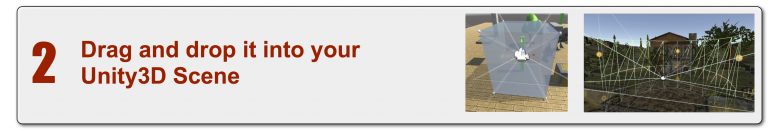

UniCAVE
A Unity3D Plugin for Non-Head Mounted Virtual Reality Display Systems
Description
The UniCAVE project aims to build a plugin for Unity3D that provides support for CAVE environments utilizing features built into the engine. This approach enables a user to configure their system entirely in the Unity3D editor providing a simplified method for supporting adapting existing Unity projects for distributed visualization platforms.
The concept for the plugin is to have a three step approach for integration:



This project is currently under development and is a work in progress. Please feel free to contribute to this project or read over the documentation to learn if the plugin is right for you.
Current Features
-
Native Unity3D time synchronization via Unity’s timeScale feature to distributed synchronization
-
NetworkView RPC calls for synchronizing random seeds and dynamic objects
-
VRPN Unity plugin to handle tracking systems
-
In-editor preview of asymmetric view frustums
Works with: